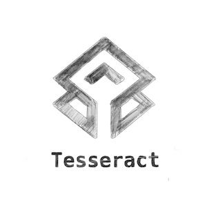

Tesseract's Visual Identity
23 March 2024

Terry Huang
Website Development
Tesseract's journey with TouchTalk isn't just about innovation; it's about forging a unique identity that champions accessibility, innovation, and empowerment at its core.
Our logo stands at the heart of our brand's visual lexicon, consolidating Tesseract's spirit in its most refined form. Crafted for adaptability, it ensures our brand's integrity and accessibility remain at the forefront across all platforms. It reflects the geometric precision and connectivity that TouchTalk embodies. The logo’s central figure, which mirrors a three-dimensional cube, perfectly encapsulates the innovative gist of our TouchTalk device. The crafted interplay of perspective in the logo creates an optical illusion that beckons the observer to look closer, to delve deeper - an echo of TouchTalk’s invitation to engage with the world in a new and profound way. The interconnected lines and shapes that compose the geometric design symbolise the complex yet structured pathways of communication that TouchTalk facilitates for non-speaking individuals. Rendered in a two tone design, the logo conveys a sense of depth and dimension, mirroring TouchTalk's ability to bring a richer, more layered form of interaction to those with special needs
From the early sketches to the eventual symbol, each step in our creative process mirrors our dedication to evolution and distinction. 
Our chosen colour palette narrates our brand's vibrancy and creativity. Persian Green, Space Cadet, and Tangerine not only complement our spirit of innovation but also enhance the communicative experience TouchTalk offers. This deliberate selection ensures our brand's vibrancy and distinctiveness, fostering an environment that is engaging and inclusive.
At the core of our brand's expression lies our typography choice - Avenir. Known for its modern elegance and readability, it places an emphasis on our commitment to clarity and accessibility. This decision ensures that our communication is not only precise but also aesthetically pleasing, maintaining a balance between form and function.
For those aligned with our passion for innovation and keen to explore the ethos defining Tesseract further, our Brand Guidelines provide a comprehensive overview of our identity. This document, a blend of guidance and inspiration, calls for engagement with our mission to empower non-verbal individuals, championing a breakthrough in communication.
As Tesseract continues to evolve, our guidelines remain the foundational element of our identity, ensuring that every innovation, product, and piece of communication is permeated with our vision. It's a commitment to not just technology creation but to crafting a future where every interaction is an opportunity for connection, understanding, and expansive growth.